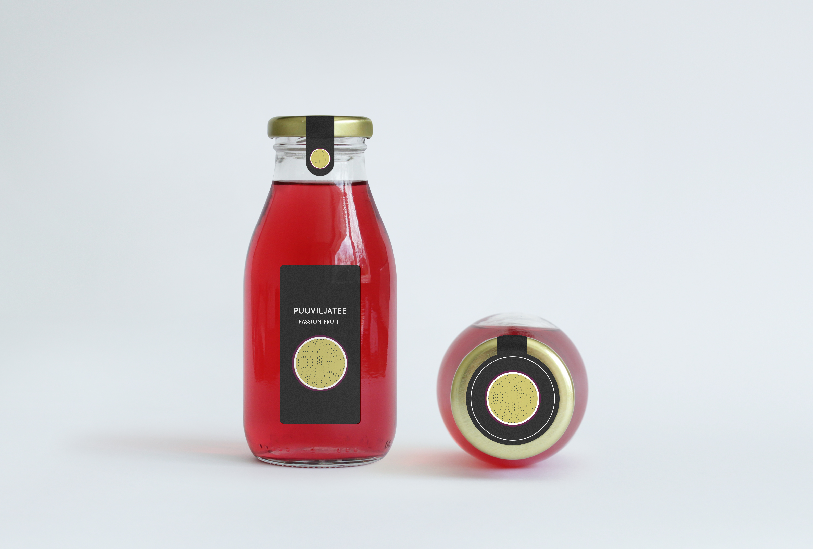
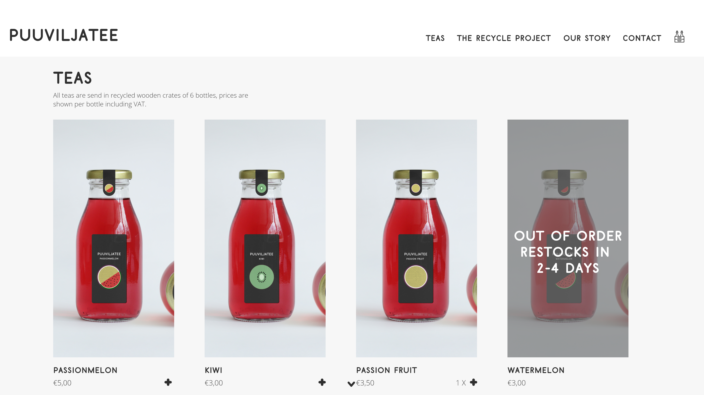
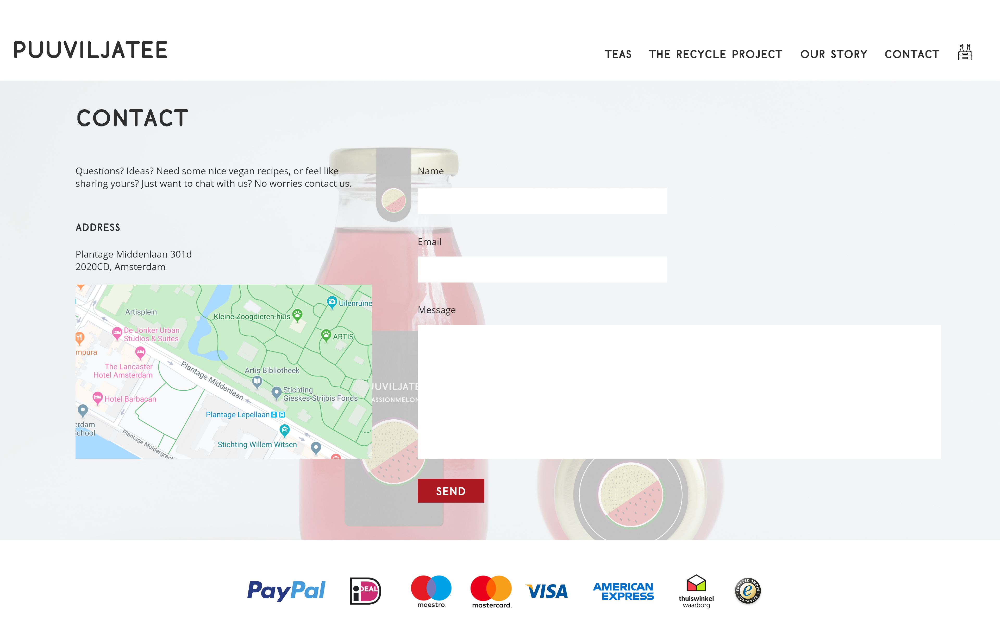

Portfolio/ Puuviljatee
Puuviljatee | 2016
Concept
Concept art, and a concept website for an ice tea brand for a starting business. I designed this as a design challange to further my skills and put my theoretical knowledge of UX into action. The core of the concept was to keep it clean, and to the point but make it still feel like a family owned business.
Concept art
Concept art for the packaging and website.
Packaging concept
Website concept
When a user adds a product to their basket the crate on the top right changes from empty to filled as feedback that the product is in the users cart. If a product is out of order, and the owner knows when the new stock will be ready the picture shows an overlay with 'out of order' and the amount of days it takes to restock. This is done as a feed forward and a nudge so the user might order another product if these take too long to restock. By using transparency, feedforward and social proof the Website should gice the user a sense of calm and trust.
The idea for the footer came after looking at several webshops, these icons should make the user trust the webshop and work as a feedforward for the payment options that the webshop accepts.
Entire website